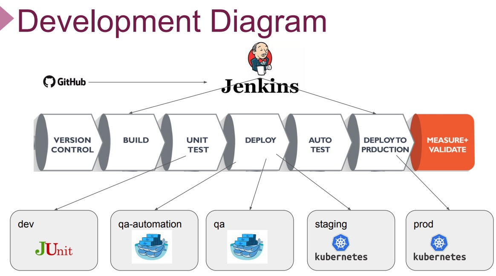
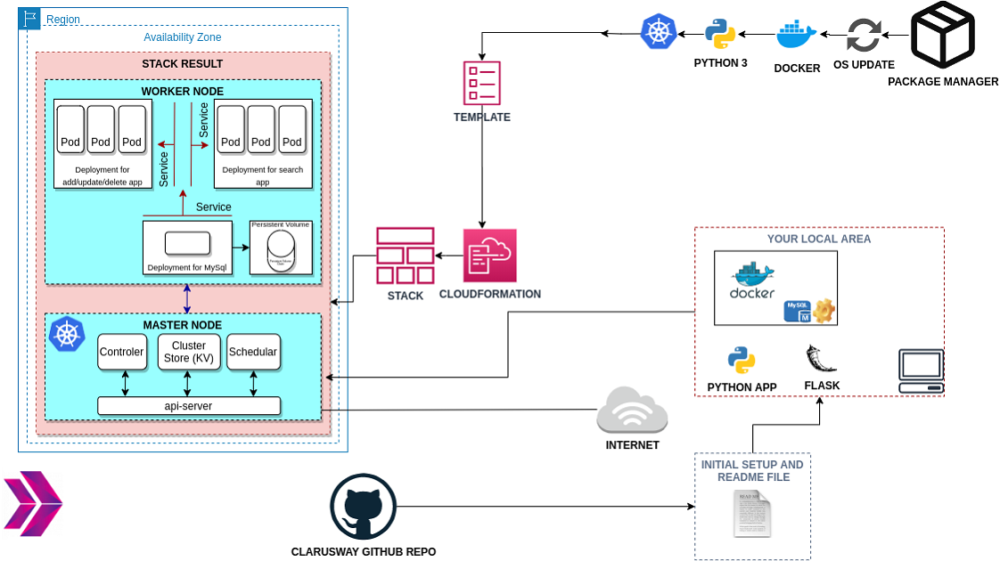
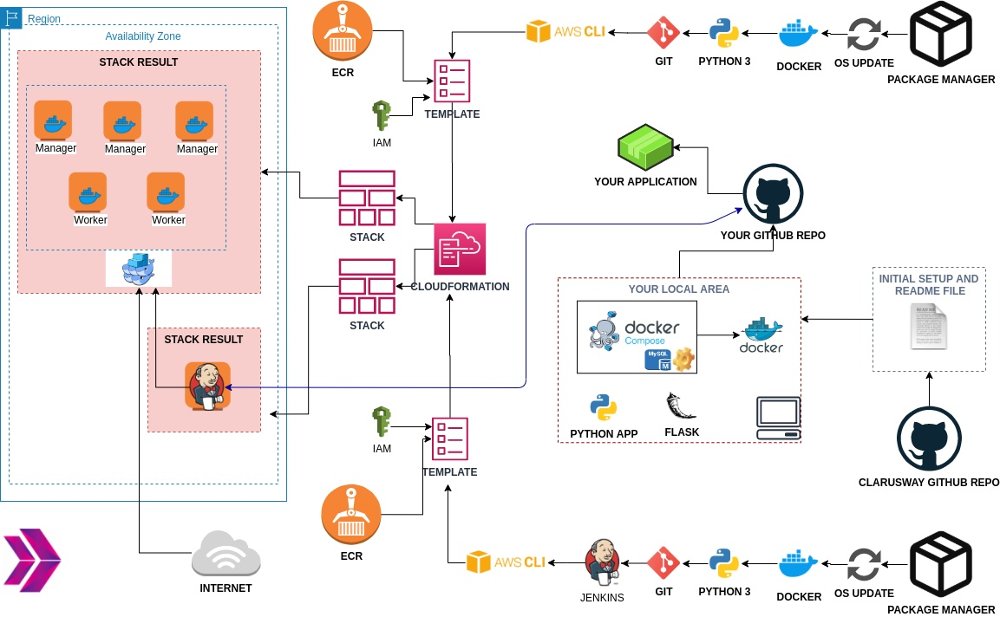
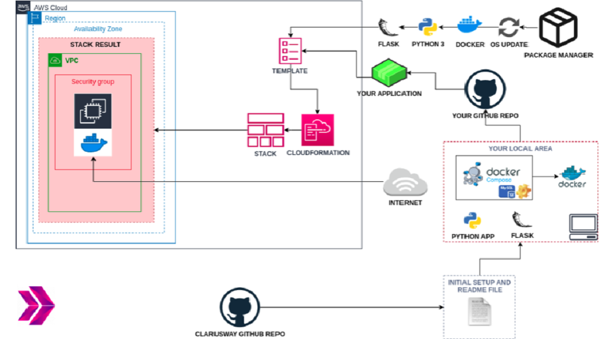
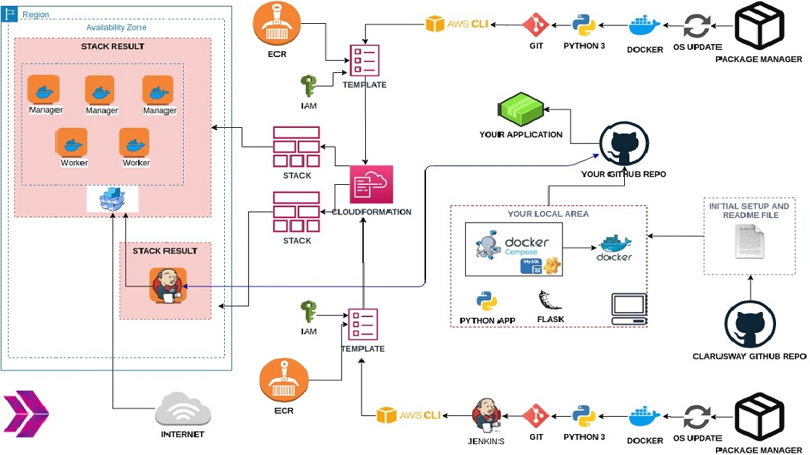
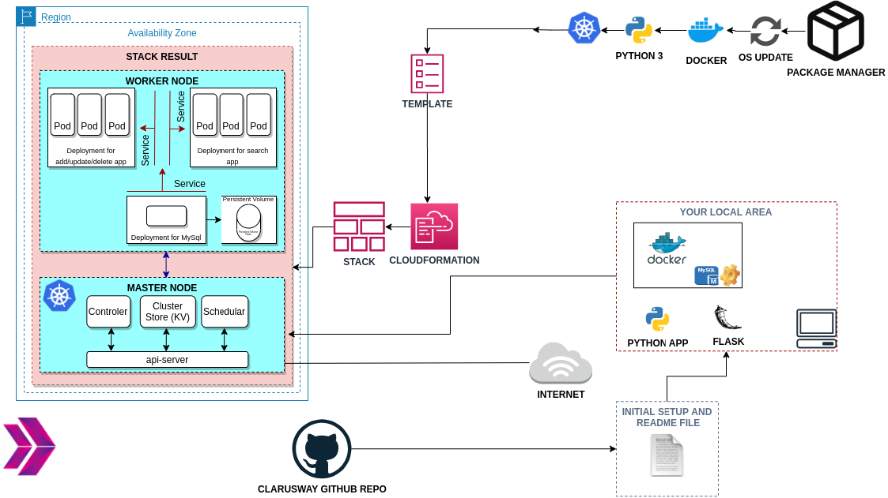
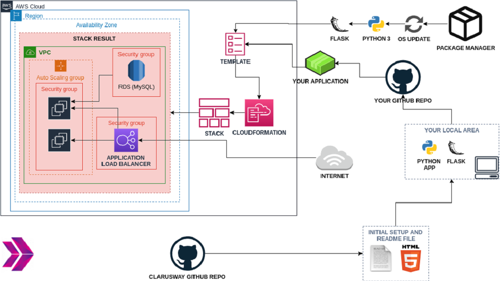
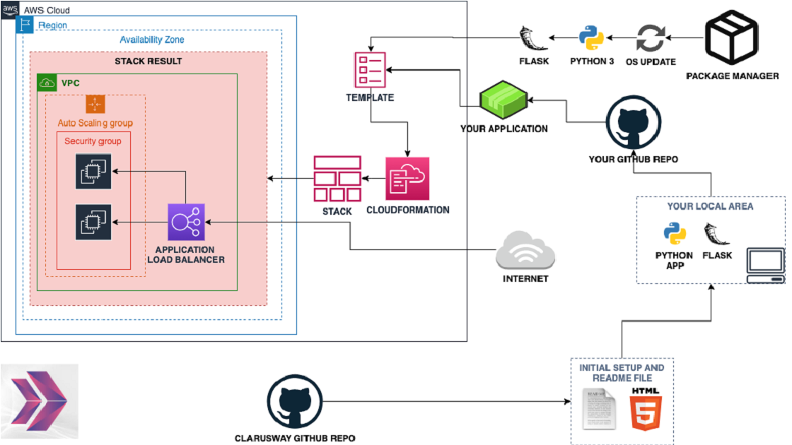
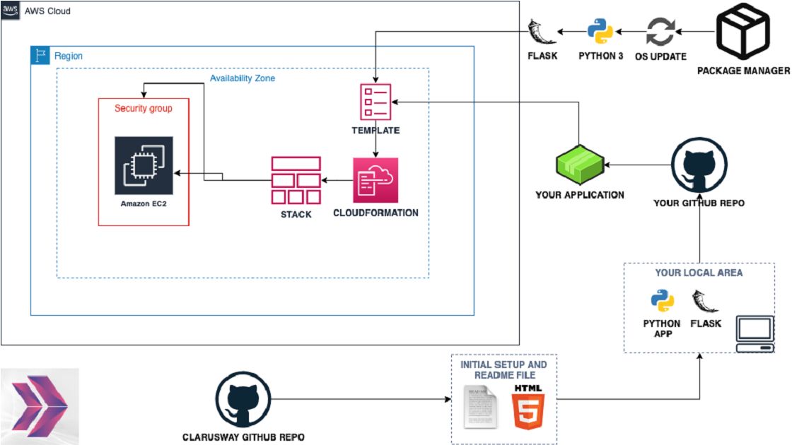

My General Projects
My Clarusway Course Projects
I want to share my 12 projects with my friends. Here, my AWS and DevOps projects with links of GitHub repo. It's includes;
Go to My GitHub Account

Jenkins Server
Distributed version of the Spring PetClinic Sample Application built with Spring Cloud This project aims to create full CI/CD Pipeline for microservice based applications using Spring Petclinic Microservices Application. Jenkins Server deployed on Elastic Compute Cloud (EC2) Instance is used as CI/CD Server to build pipelines.Details
Kubernetes
Microservice Architecture for Phonebook Web Application (Python Flask) with MySQL using Kubernetes. Phonebook Microservice Web Application aims to create a web application with MySQL Database using Docker and Kubernetes to give students the understanding of Microservice architecture. In this application, we have a frontend service and a backend service to interact with database service. Each service will be managed by a Kubernetes deployment. The backend service will be a gateway for the application and it will serve the necessary web pages for create, delete and update operations while the frontend service will serve a search page in order to conduct read operations. To preserve the data in the database, persistent volume and persistent volume claim concepts should be adopted.Details

Jenkins Pipeline
Jenkins Pipeline for Dockerized Phonebook Application (Python Flask & MySQL) Deployed on Docker Swarm This project aims to create a Jenkins pipeline to deploy the Phonebook Application web application with Docker Swarm on Elastic Compute Cloud (EC2) Instances by pulling the app images from the AWS Elastic Container Registry (ECR) repository. Details
Dockerization
Dockerization of Bookstore Web API (Python Flask) with MySQL Bookstore Web API Application aims to create a bookstore web service using Docker. The application code is to be deployed as a RESTful web service with Flask using Dockerfile and Docker Compose on AWS Elastic Compute Cloud (EC2) Instance using AWS Cloudformation Service. Details

AWS Cloudformation
Kittens Carousel Static Website deployed on AWS EC2 using Cloudformation Kittens Carousel is a static website application deployed with Apache Web Server on AWS Elastic Compute Cloud (EC2) Instance using AWS Cloudformation Service.Details
Static Website
Kittens Carousel Static Website deployed on AWS Cloudfront, S3 and Route 53 using Cloudformation Kittens Carousel is a static website application deployed on AWS Simple Storage Service (S3), served through Cloudfront and Route 53 using AWS Cloudformation Service. Details

Python Flask
Phonebook Application (Python Flask) deployed on AWS Application Load Balancer with Auto Scaling and Relational Database Service using AWS Cloudformation The Phonebook Application aims to create a phonebook application in Python and deployed as a web application with Flask on AWS Application Load Balancer with Auto Scaling Group of Elastic Compute Cloud (EC2) Instances and Relational Database Service (RDS) using AWS Cloudformation Service. Details
Load Balancer
Milliseconds Converter Application (Python Flask) deployed on AWS Application Load Balancer with Auto Scaling Group using AWS Cloudformation The Milliseconds Converter Application aims to convert the given time in milliseconds into hours, minutes, and seconds. The application is to be coded in Python and deployed as a web application with Flask on AWS Application Load Balancer with Auto Scaling Group of Elastic Compute Cloud (EC2) Instances using AWS Cloudformation Service. Details
EC2 with Cloudformation
Milliseconds Converter Application (Python Flask) deployed on AWS Application Load Balancer with Auto Scaling Group using AWS Cloudformation The Milliseconds Converter Application aims to convert the given time in milliseconds into hours, minutes, and seconds. The application is to be coded in Python and deployed as a web application with Flask on AWS Application Load Balancer with Auto Scaling Group of Elastic Compute Cloud (EC2) Instances using AWS Cloudformation Service. Details
EC2 with Cloudformation
Roman Numerals Converter Application (Python Flask) deployed on AWS EC2 with Cloudformation The Roman Numerals Converter Application aims to convert the given number to the Roman numerals. The application is to be coded in Python and deployed as a web application with Flask on AWS Elastic Compute Cloud (EC2) Instance using AWS Cloudformation Service. Details
Follow My Personal Website
I'll always upgrade and add my new projects